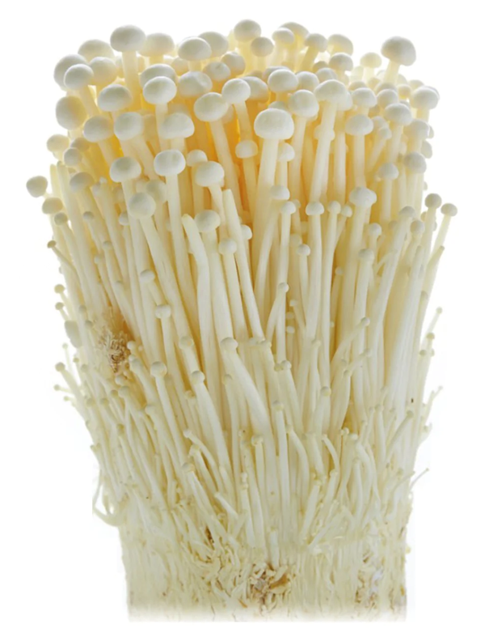

Mushrooms
Notes
- 250g = 15 medium mushrooms
- ~17g per mushroom
- Mushrooms halve in size after cooking
- Cannot be overcooked
Pan-roasted mushrooms
- Try air fry
- Original recipe: The Food Lab, p441
- Heat until shimmery
- Heat until lose liquid and then turn golden brown, about 18 mins
- Add and heat for 1-2 mins
- 1 shallot chopped
- 1 clove garlic
- ½ tsp fresh thyme leaves
- Remove heat and mix with
- ½ tsp soy sauce
- ¼ tsp lemon juice
- 1 tsp butter
- Season to taste
Chilli & garlic mushrooms
- Fry
- olive oil
- 200g mushrooms sliced
- 1 shallot diced
- 2 cloves garlic sliced
- ½ red chilli chopped
- To serve add
- ½ tbsp lemon juice
- seasoning
Types
Enoki
